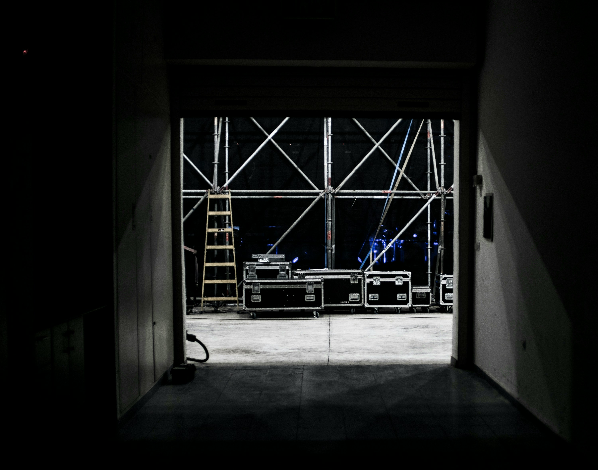
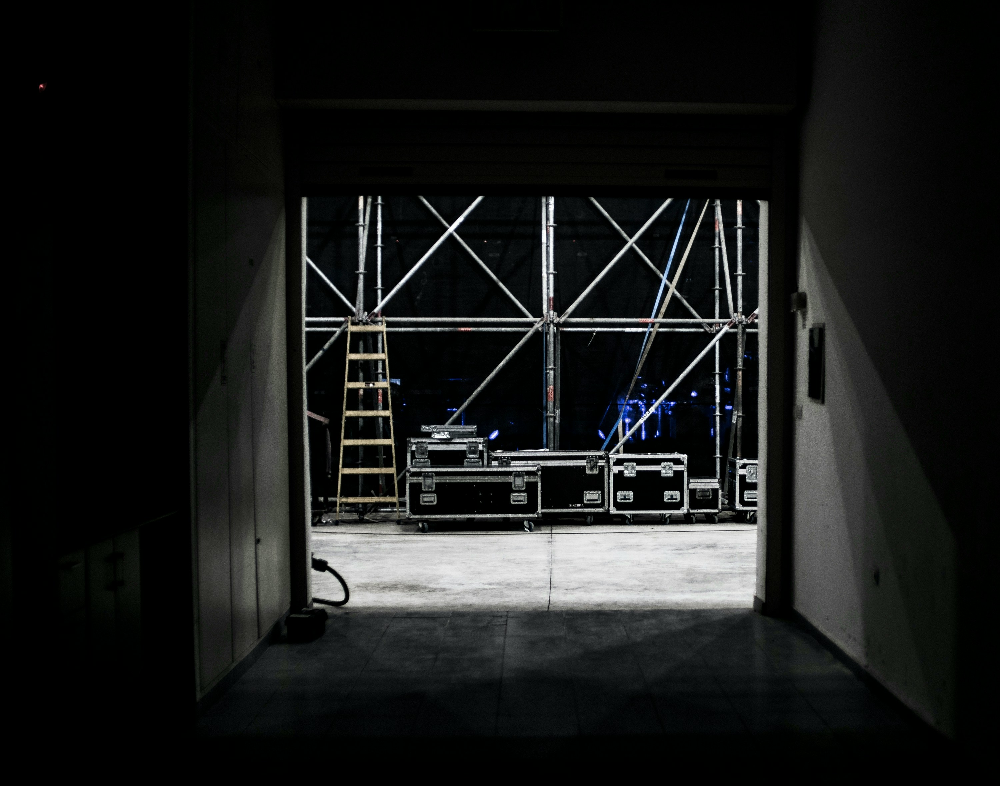
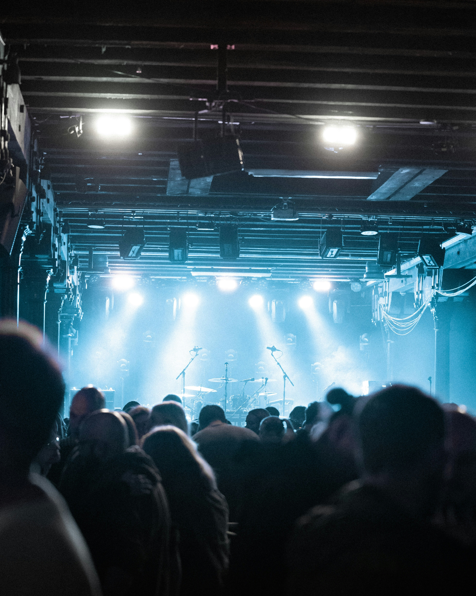
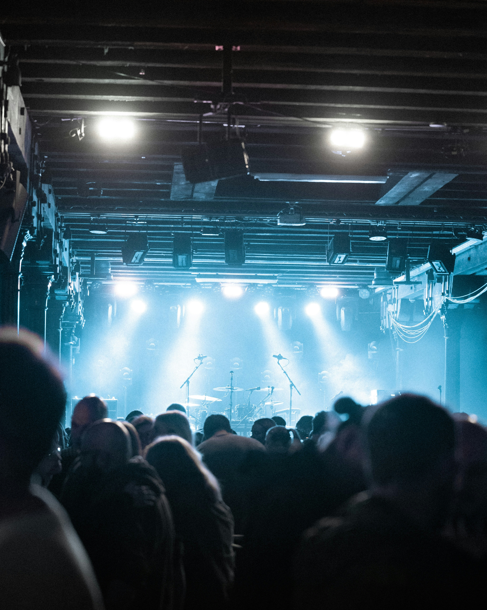
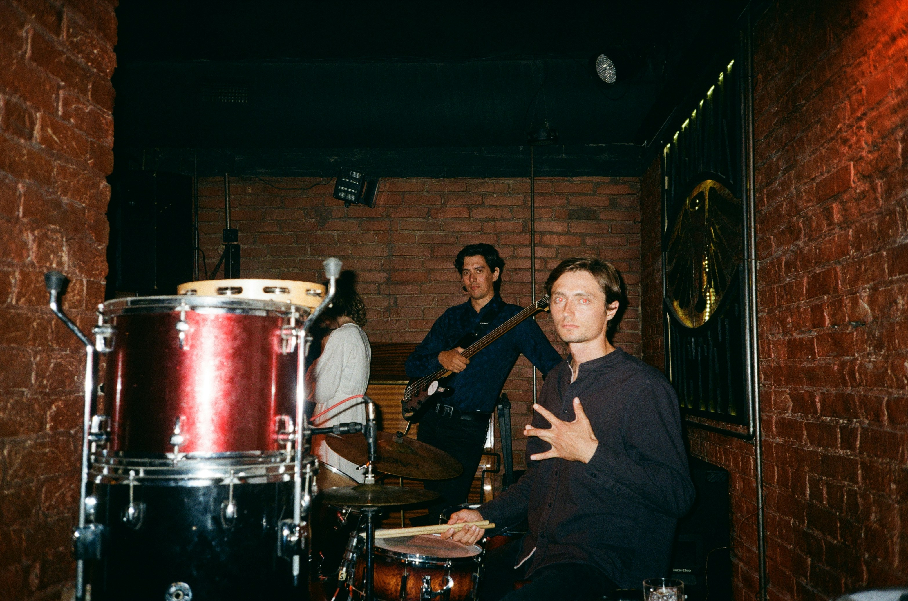
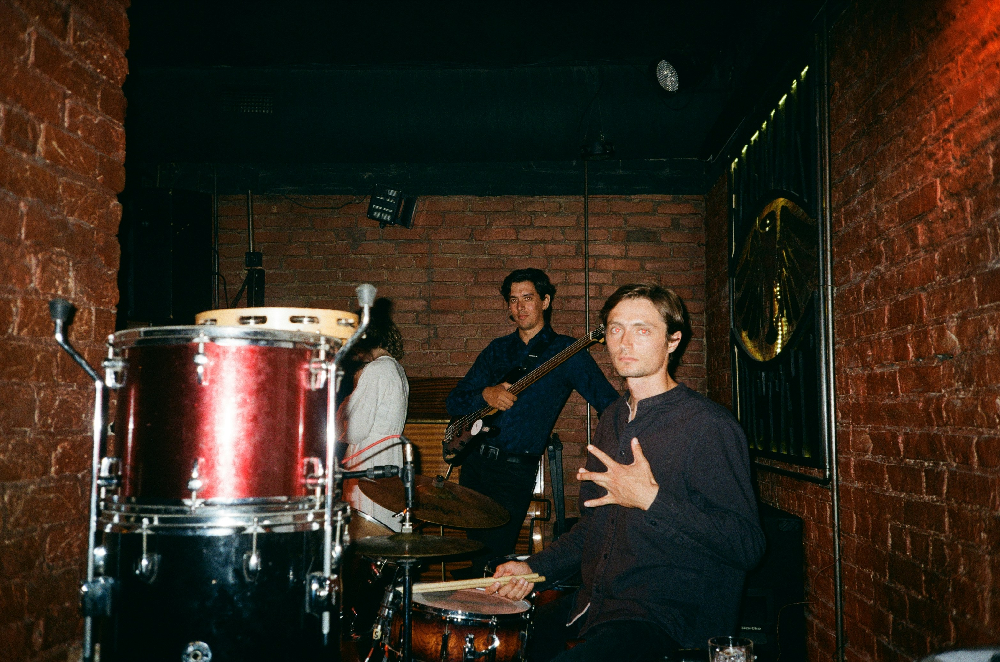

Alex Andersson
Alex grundade bandet efter att ha skrivit sin första låt i Python. Älskar att skriva texter om for-loopar och if-satser.

Sveriges hårdaste rockband med en touch av programmering!
Se kommande konserterThe Codeer allong bildades 2020 när fyra programmeringsstudenter insåg att de älskade musik lika mycket som kod. Våra låtar handlar om buggar, deadlines och kärleken till clean code.
Sedan starten har vi turnerat i hela Sverige, släppt två album och vunnit priset "Årets Nördband" tre år i rad!
Alex grundade bandet efter att ha skrivit sin första låt i Python. Älskar att skriva texter om for-loopar och if-satser.
Bas
Sam kom med från underground-scenen och älskar tunga basgångar. Favoritprogrammeringsspråk: Assembly (för det är nära hårdvaran).
Trummor
Jordan håller takten både i koden och på scen. Specialitet: Dubbelbasstrummor i 64-bit.
Keyboard & Synth
Morgan skapar de elektroniska ljuden som gör vår musik unik. Bygger sina egna synthesizers med Arduino.
Kom och se oss live! Biljetter släpps en månad före varje spelning.
| Datum | Plats | Stad | Biljetter |
|---|---|---|---|
| 15 Januari 2026 | Debaser Strand | Stockholm | Köp här |
| 22 Januari 2026 | Pustervik | Göteborg | Köp här |
| 5 Februari 2026 | KB Malmö | Malmö | Köp här |
| 14 Februari 2026 | Babel | Malmö | Köp här |
| 28 Februari 2026 | Sticky Fingers | Göteborg | Köp här |
Bilder från våra konserter och studiosessioner
 

 

 
